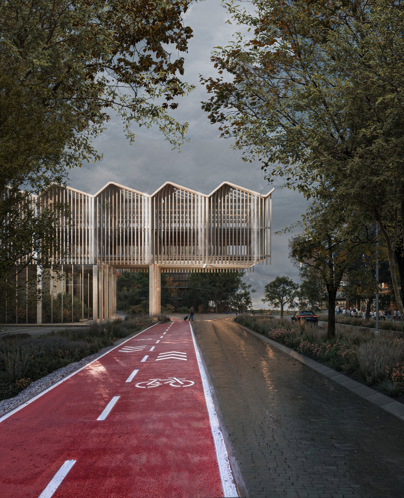
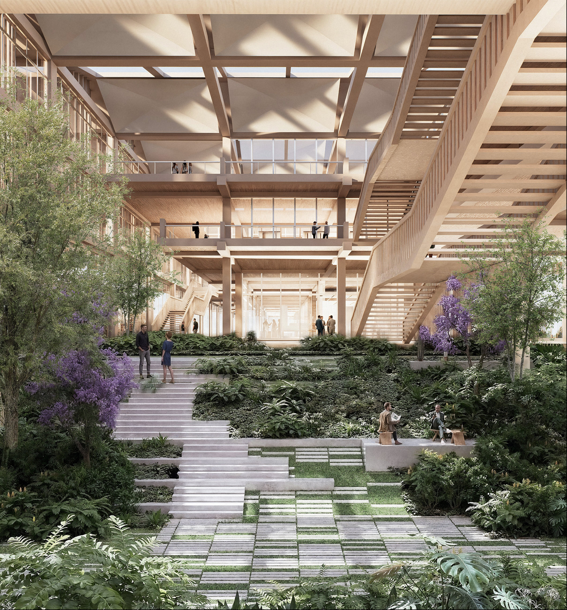
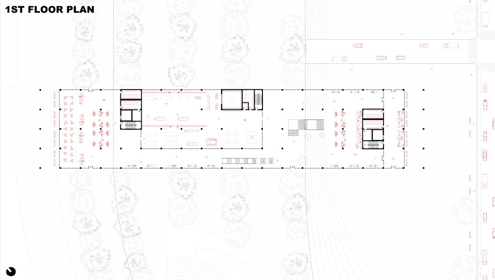
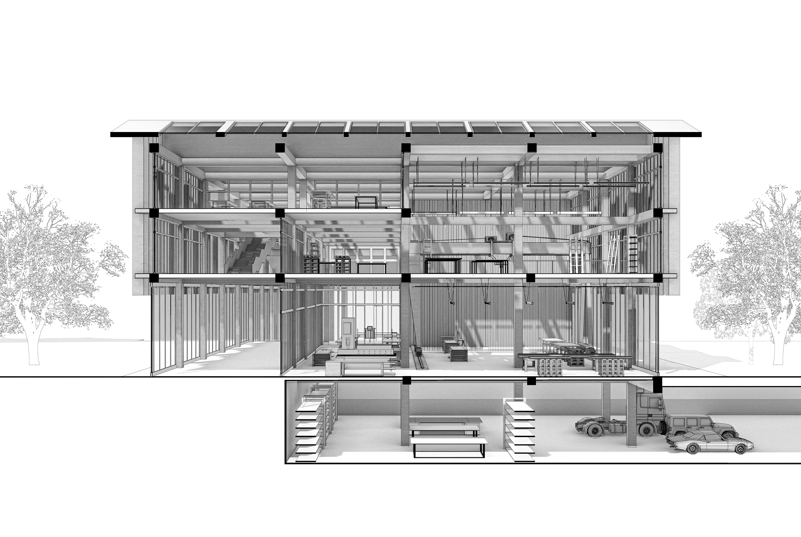

This proposal for the Brooklyn Marine Terminal transforms the waterfront into a resilient public campus centered on green space, community use, and maritime workforce education. A wave-formed maker space provides hands-on training for port and maritime careers, while the surrounding park creates new recreational and civic spaces for the neighborhood. Because the site is highly vulnerable to flooding, the design is shaped by berm landscapes, terraced topography, and a reworked shoreline that provide integrated coastal protection. Ultimately, the project seamlessly combines access, learning, and climate resilience into a new waterfront destination for Red Hook.
Studio Project
Brooklyn, NY
2025







Next Project
Lafayette Residence